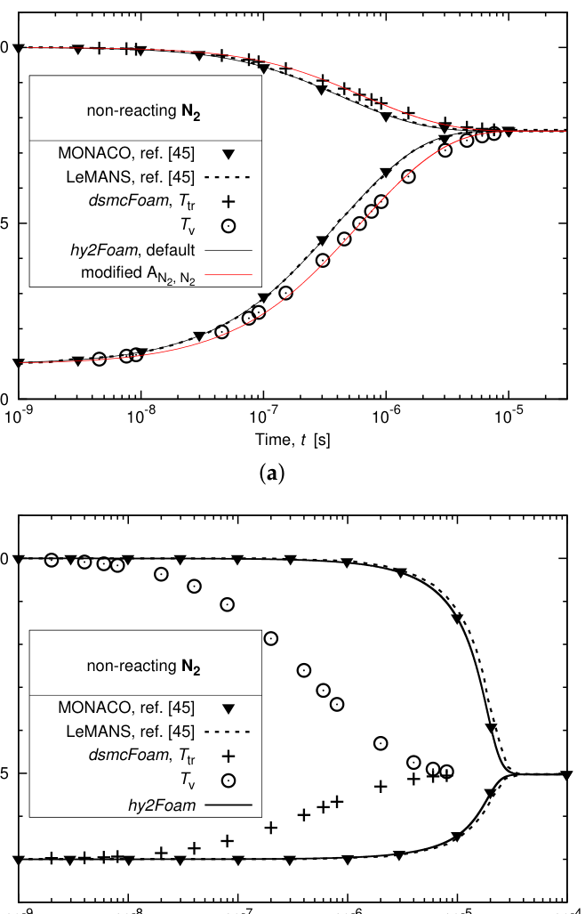
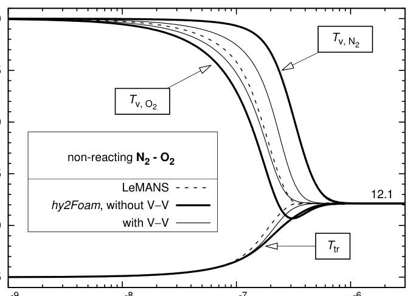
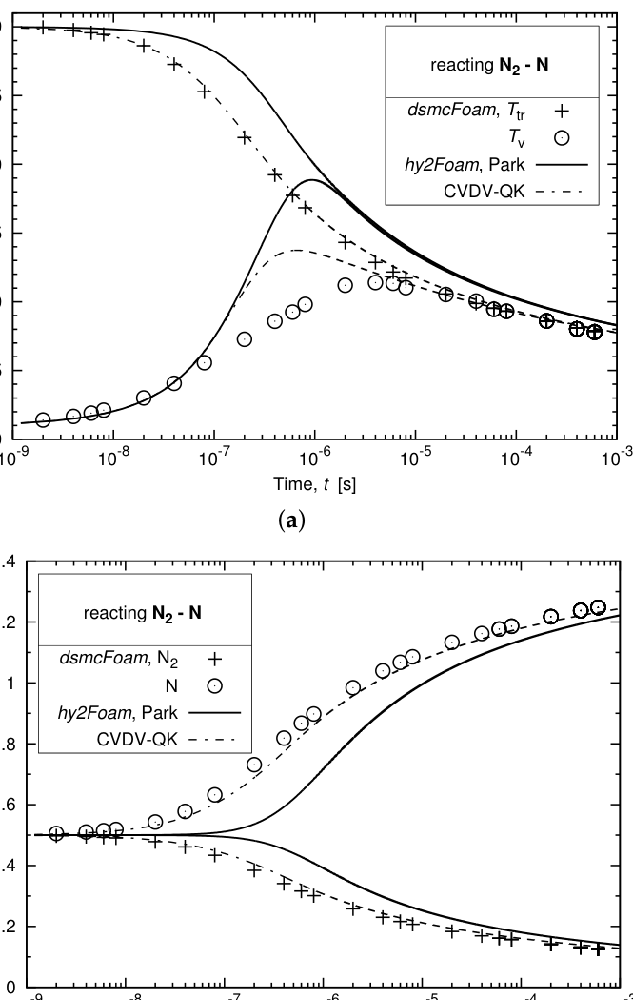
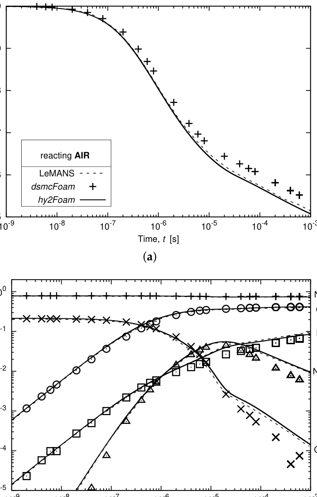

01中文摘要
本文介绍在开源 CFD 平台 OpenFOAM 中开发的双温度求解器 hy2Foam。该求解器区分平动-转动温度与多个振动-电子温度，可在 11 组分空气混合物中模拟振动-平动和振动-振动能量交换，并采用 Park TTv 模型或振动-离解-振动耦合（CVDV）模型处理化学-振动耦合，可选择是否包含电子能。文章通过零维绝热热浴算例进行验证，结果与 LeMANS 及文献数据吻合，并与开源 DSMC 程序 dsmcFoam 比较，表明采用 CVDV 和量子动理学反应速率可改善 CFD 与 DSMC 化学模块的一致性。
原始摘要（英文/原文）
A two-temperature CFD (computational fluid dynamics) solver is a prerequisite to any spacecraft re-entry numerical study that aims at producing results with a satisfactory level of accuracy within realistic timescales. In this respect, a new two-temperature CFD solver, hy2Foam, has been developed within the framework of the open-source CFD platform OpenFOAM for the prediction of hypersonic reacting flows. This solver makes the distinct juncture between the trans-rotational and multiple vibrational-electronic temperatures. hy2Foam has the capability to model vibrational-translational and vibrational-vibrational energy exchanges in an eleven-species air mixture. It makes use of either the Park TTv model or the coupled vibration-dissociation-vibration (CVDV) model to handle chemistry-vibration coupling and it can simulate flows with or without electronic energy. Verification of the code for various zero-dimensional adiabatic heat baths of progressive complexity has been carried out. hy2Foam has been shown to produce results in good agreement with those given by the CFD code LeMANS (The Michigan Aerothermodynamic Navier-Stokes solver) and previously published data. A comparison is also performed with the open-source DSMC (direct simulation Monte Carlo) code dsmcFoam. It has been demonstrated that the use of the CVDV model and rates derived from Quantum-Kinetic theory promote a satisfactory consistency between the CFD and DSMC chemistry modules.
02阅读说明
数值求解器开发与验证类期刊论文（Aerospace 2016, 3, 34，21页）。bundle 含完整正文、9项图件清单与带页码全文；文本层公式多处上下标错位，已回读 PDF 第3、5、8、11页核对式(1)、(18)、(19)、(33)–(41)的符号与编号。全部结果为零维绝热热浴，无网格、无空间梯度；工况参数、对比代码与主要定量结论均有交代，信息完整度较高。图3–图9为温度/数密度-时间曲线，只能依据图注、正文与图上标注读取平衡值。 文章类型：期刊
03一句话核心与三句话摘要
在OpenFOAM中实现双温hy2Foam，用零维热浴逐项验证，并主张CVDV+QK化学-振动耦合最贴近DSMC。
- 高超声速再入气动热预测需要区分平动-转动温度与振动-电子温度的双温CFD，而开源平台长期缺少经系统验证、含多振动温度与化学-振动耦合的求解器。 AI概括
- 作者在OpenFOAM 2.3.0上以rhoCentralFoam与reactingFoam为基础构建hy2Foam（Ttr加多个Tve,s，Landau-Teller V-T、Knab V-V、Park TTv或CVDV耦合、可选电子能），对纯N2、N2-N、N2-O2与5组分空气零维热浴逐项验证，结果与LeMANS、MONACO一致，CVDV-QK使反应N2-N的温度与组分演化较Park组合明显更接近dsmcFoam。 AI概括
- 作者据此推荐CVDV+QK作为混合CFD-DSMC求解器的化学-振动与速率组合，并指出电子能模式在10,000 K以上不可忽略（平衡温度差达23.7%）。 AI概括
04核心内容清单
| 要点 | 类型 | 重要性 | 原文依据 | 属性 |
|---|---|---|---|---|
| hy2Foam在OpenFOAM 2.3.0中实现Ttr与多个Tve,s的双温框架，可开关电子能，支持11组分空气与V-T、V-V交换。 | 求解器架构 | A | p1摘要；p3–6 §2.1 | 原文明确 |
| V-T源项用Landau-Teller式(8)，弛豫时间用Millikan-White加Park修正、按摩尔分数加权（式9–15）；σm取3.0×10^-21 m²（N2、O2）与3.0×10^-22 m²（NO）。 | 物理模型 | A | p4–5 §2.1.1，式(8)–(17) | 原文明确 |
| V-V源项用Knab模型式(18)，交换概率推荐常数10^-2；多振动温度保留主要是为了与dsmcFoam一致耦合。 | 物理模型 | B | p5 §2.1.1，式(18) | 原文明确 |
| 化学-振动耦合提供Park TTv（解离控制温度TP=Ttr^0.7·Tve^0.3）与CVDV两套模型，后者用Marrone-Treanor修正kf并区分前/后向振动能移除。 | 物理模型 | A | p7–8 §2.2.2–2.2.3，式(29)–(40)，表1 | 原文明确 |
| 纯N2加热热浴中hy2Foam与LeMANS、MONACO吻合，dsmcFoam弛豫慢48%；平衡温度7623.3 K，初始总温9588.0 K。 | 验证结果 | A | p10–11 §3.1.1，图3a，式(41) | 原文明确 |
| Ttr0=30,000 K时计入电子能使弛豫快约26%，平衡温度由17.7×10^3 K升至21.9×10^3 K（差23.7%），10,000 K以上必须考虑电子模式。 | 定量结论 | A | p11 §3.1.2，图4 | 原文明确 |
| N2-N混合物的hy2Foam/LeMANS差异源于式(15)约定不同（LeMANS用混合物数密度且σm=1×10^-20 m²），统一约定后曲线几乎重合。 | 验证/解释 | A | p12 §3.2，图5 | 原文明确 |
| N2-O2热浴中V-V加速振动能再分配，但N2与O2振动池始终分离；LeMANS单一Tv位于两者之间。 | 机理/结果 | B | p13 §3.3，图6 | 原文明确 |
| 反应N2-N中Park TTv+Park 1993速率的化学反应影响比DSMC慢约10倍；CVDV+QK显著改善Ttr与组分演化。 | 核心结果 | A | p14–15 §3.4，图7 | 原文明确 |
| 初始热平衡算例中Park组合先发生热弛豫再起化学反应，导致Tv下降滞后；CVDV-QK仍更接近dsmcFoam。 | 核心结果 | A | p15 §3.4，图8 | 原文明确 |
| 5组分空气19反应、单温降级模式下hy2Foam与LeMANS的温度与数密度吻合。 | 验证结果 | B | p16 §3.5，图9 | 原文明确 |
| 作者推荐CVDV+QK作为混合CFD-DSMC的化学-振动/速率组合，理由是二者与QK DSMC化学模块最一致。 | 结论/建议 | A | p16–17 §3.4末、§4 | 原文明确 |
05引言：研究问题与领域缺口
再入飞行器在60–80 km高度同时存在连续介质与稀薄区：NSF方程在非连续区失效，DSMC在连续区代价过高，因此需要双温连续介质求解器并与DSMC衔接。作者回顾Park双温模型及DPLR、LAURA、VULCAN、LeMANS、US3D等专用代码，指出它们多为闭源；同课题组的dsmcFoam已实现振动能与QK化学反应。hy2Foam的目标是最终与dsmcFoam组成混合CFD-DSMC求解器。本文属验证链的第一部分：用逐步复杂化的零维绝热热浴隔离各物理机制，与文献数据、LeMANS和dsmcFoam对比，并给出适用于混合求解器的化学-振动/速率模型组合（p1–3，§1）。
06流动条件与几何构型
| 项目 | 数值/描述 | 依据 | 备注 |
|---|---|---|---|
| 计算域 | 单个立方单元，边长1×10^-5 m，绝热零维热浴 | p9 §3 | |
| 时间步 | CFD与DSMC均为1×10^-9 s | p9 §3 | |
| DSMC采样 | 每次≥50,000个dsmcFoam粒子；结果为三次统计独立计算的系综平均 | p9 §3 | |
| 对比代码 | CFD：LeMANS；DSMC：MONACO、dsmcFoam；另引用文献热浴数据 | p9 §3 | |
| 算例1：纯N2 V-T加热 | Ttr0=10,000 K，Tv,N2^0=1000 K，p0=1 atm | p10 §3.1.1，图3a | |
| 算例2：纯N2 V-T冷却 | Ttr0=3000 K，Tv,N2^0=10,000 K，p0=1 atm | p10 §3.1.1，图3b | |
| 算例3：N2含电子能 | Ttr0=30,000 K，Tv0=1000 K（沿用前述加热算例），p0=1 atm；对照为不含电子能 | p11 §3.1.2，图4；Tv0沿用属AI概括 | |
| 算例4：N2-N非反应混合 | N2与N等比例，各自数密度5.0×10^22 m^-3；初始温度“与上一段相同”（即Ttr0=30,000 K、Tv0=1000 K） | p12 §3.2，图5 | |
| 算例5：N2-O2非反应混合 | N2与O2等比例，Ttr0=5000 K，Tv0=30,000 K，p0=1 atm | p13 §3.3，图6 | |
| 算例6：反应N2-N | Ttr0=30,000 K，Tv0=1000 K，N2与N数密度各5.0×10^22 m^-3；反应N2+N2→2N+N2（不可逆） | p13–14 §3.4，图7 | |
| 算例7：反应空气 | 5组分空气，19个反应（15个解离+4个交换），p0=0.063 atm，T0=10,000 K；假定各分子温度始终平衡，hy2Foam降级为单温 | p16 §3.5，图9 | |
| Park 1993速率 | A=7.0×10^21，β=-1.6，Ta=113,200 K（A单位m³·mol⁻¹·s⁻¹） | p14 表2，§3.4 | |
| QK速率 | A=2.47×10^18，β=-0.62，Ta=113,500 K（A单位m³·mol⁻¹·s⁻¹） | p14 表2，§3.4 | |
| Park TTv指数 | αP=0.7（偏向平动-转动温度） | p7 §2.2.2，式(29) | |
| 碰撞截面σm | N2、O2取3.0×10^-21 m²；NO取3.0×10^-22 m²（原文默认10^-21 m²） | p5 §2.1.1，式(17)后 | |
| V-V交换概率 | Pm,l推荐常数10^-2 | p5 §2.1.1，式(18)后 | |
| dsmcFoam设置 | 三温度（平动、转动、振动）；转动碰撞数Zr设为1以与双温CFD对比；QK化学与量子Larsen-Borgnakke | p9 §3；p3 §1 | |
| LeMANS约定差异 | 式(15)中nm,s取混合物数密度，σm=1×10^-20 m²；hy2Foam默认取碰撞对数密度与3.0×10^-21 m² | p12 §3.2 | |
| hyFoam前置验证 | H2-I2↔2HI，700 K，0.528 atm，C0=4.54 mol/m³ | p9 §2.3，图2 |
07核心现象与关键参数
| 参数 | 定义 | 数值 | 关系/说明 | 依据 |
|---|---|---|---|---|
| Ttr | 平动-转动平衡温度 | 各算例初值3000–30,000 K | p3 §2.1.1 | |
| Tve,s | 组分s的振动-电子温度；多振动温度模型 | 各算例初值1000–30,000 K | p3 §2.1.1 | |
| Teq（纯N2加热） | V-T弛豫最终平衡温度 | 7623.3 K | p11 §3.1.1，图3a | |
| ζ0tot（振动部分） | 初始振动自由度 | 0.240 | p10–11 §3.1.1 | |
| ζeqtot | 平衡总自由度，ζt+ζr+ζv | 6.590（ζv=1.590） | p11 §3.1.1 | |
| Tov0 | 按式(41)由能量均分反推的初始总温 | 9588.0 K | p11 §3.1.1，式(41) | |
| 弛豫时间差（dsmcFoam） | 恢复99%平衡温度所需时间相对hy2Foam | 慢48% | p11 §3.1.1，图3a | |
| 电子能对弛豫的影响 | 含/不含电子能的平衡弛豫时间比 | 含电子能快约26% | p11 §3.1.2，图4 | |
| 电子能对平衡温度的影响 | Ttr0=30,000 K时含与不含电子能的平衡温度 | 21.9×10^3 K 对 17.7×10^3 K，差23.7% | p11 §3.1.2，图4 | |
| N2-N平衡温度 | 图5标注的平衡温度 | 24.4×10^3 K | p12 §3.2，图5 | |
| N2-O2平衡温度 | 图6标注的平衡温度 | 12.1×10^3 K | p13 §3.3，图6 | |
| N的电子自由度 | 平衡时N电子模式对混合物的自由度贡献 | 1.39 | p13 §3.2 | |
| 反应滞后倍数 | Park组合相对DSMC化学反应显著影响的时间比 | 约10倍 | p15 §3.4，图7 | |
| 空气反应数 | 5组分空气中考虑的基元反应总数 | 19（15解离+4交换） | p16 §3.5 |
08方法与数据
总能量按式(1)分解为动能、平动、转动、振动、电子、电子平动与化学能；平动与转动取同一Ttr，电子与电子能取参考分子的Tve,ref，每个振动激发组分各有Tve,s（式(3)–(7)）。V-T交换用Landau-Teller式(8)，弛豫时间取Millikan-White与Park修正之和的摩尔分数加权（式(9)–(17)）；V-V交换用Knab模型式(18)，交换概率取常数10^-2；另定义总温Tov式(19)–(21)。零维NSF写成dU/dt=Ẇ（式22–26），源项含Q_V-T、Q_V-V、Q_C-V，电子相关三项暂省略。化学用质量作用定律式(27)与Arrhenius式(28)；Park TTv以TP=Ttr^αP·Tve^(1-αP)（αP=0.7）作解离控制温度，各类反应的控制温度见表1；CVDV用Marrone-Treanor修正的kf（式33–40）。实现基于OpenFOAM 2.3.0：rhoCentralFoam（Kurganov-Tadmor中心迎风）加reactingFoam化学，先形成单温hyFoam并用H2-I2↔2HI（700 K、0.528 atm、C0=4.54 mol/m³）验证，再扩展为hy2Foam。热浴为边长1×10^-5 m的单个立方单元，CFD与DSMC时间步均1×10^-9 s，每次dsmcFoam计算至少50,000个粒子，取三次独立系综平均；dsmcFoam有平动、转动、振动三个温度，将转动碰撞数Zr设为1以便与双温CFD对比（p3–9，§2；p9，§3）。
| 项目 | 内容 | 依据 | 备注 |
|---|---|---|---|
| 求解框架 | OpenFOAM 2.3.0；以rhoCentralFoam（Kurganov-Tadmor中心迎风格式）为流场基础，化学取自reactingFoam | p8–9 §2.3 | |
| 双温封闭 | Ttr加多个Tve,s；电子与电子温度取参考分子的Tve,ref；离子温度跟随中性分子 | p3、p6 §2.1.1–2.1.2 | |
| V-T模型 | Landau-Teller源项；Millikan-White加Park高温柔性碰撞截面修正；混合物按摩尔分数加权 | p4–5 §2.1.1，式(8)–(17) | |
| V-V模型 | Knab等模型，交换概率常数10^-2 | p5 §2.1.1，式(18) | |
| 总温定义 | 按各模式自由度加权的Tov，用于与DSMC的宏观温度比较 | p5–6 §2.1.1，式(19)–(21) | |
| 化学模型 | 质量作用定律+Arrhenius；解离控制温度用Park TTv；反应类型控制温度见表1；本文化学不可逆 | p6–7 §2.2.1–2.2.2，式(27)–(29)，表1 | |
| 化学-振动耦合 | 非优先模型D'=ev；优先模型D'=αmDm（αm常数0.3或随Ttr线性）；CVDV用Marrone-Treanor修正 | p7–8 §2.2.2–2.2.3，式(30)–(40) | |
| 零维方程 | dU/dt=Ẇ，U=(ρ,ρs,ρu,ρv,ρw,Eve,m,E)；电子相关源项暂省略 | p6 §2.1.2，式(22)–(26) | |
| 验证策略 | 按纯组分V-T→多组分V-T/V-V→反应混合物逐步隔离机制；与LeMANS、MONACO、dsmcFoam及文献数据对比 | p9–16 §3 | |
| 数值设置 | 单单元1×10^-5 m；Δt=1×10^-9 s；DSMC≥50,000粒子、三次系综平均；Zr=1 | p9 §3 | |
| 验证局限 | 仅零维绝热热浴，无空间离散、壁面、激波与多维效应；未做网格/时间步无关性研究 | p9 §3；p17 §4 |
09核心推导与公式
把总能量分解到平动、转动、振动、电子与化学模式，令平动-转动共温Ttr、振动-电子按组分共温Tve,s；对每个振动池写Landau-Teller V-T松弛与Knab V-V交换，用Millikan-White/Park关联给出松弛时间，再用Park TTv或CVDV把化学反应与振动能移除耦合起来，最终形成零维守恒方程dU/dt=Ẇ的源项。
关键假设
- 平动与转动在少数碰撞内达到平衡，始终共用Ttr
- 电子与电子能模式与振动模式平衡，取参考分子的Tve,ref
- 每个振动激发组分可有自己的Tve,s（多振动温度模型）
- 振动能级用简谐振荡器、等间距能级描述
- V-T松弛用Landau-Teller线性弛豫，Millikan-White公式适用300–8000 K，误差不超过5倍
- 化学反应在本文中视为不可逆，后向速率不参与计算
- 零维、绝热、无空间通量；电子相关源项Qh-e、Qm,e-V、Qe-i暂省略
推导过程
总能量写成动能、平动、转动、振动、电子、电子平动与生成焓之和；振动模式总能量等于各组分部分密度与比振动能之积。
平动3/2 RsTtr、转动RsTtr；振动用简谐振荡器的Planck-Einstein形式；电子平动ReTve,ref；电子激发用配分函数加权求和。
按Landau-Teller方程，振动-电子能向平动-转动温度对应值指数松弛，时间常数为摩尔平均V-T弛豫时间。
混合物弛豫时间按摩尔分数加权；组分对弛豫时间为Millikan-White项与Park项之和，MW项含A、B系数与压力，Park项用限制碰撞截面修正高温截面。
用Knab模型描述不同分子振动池之间的能量交换，源项与碰撞对截面、交换概率、约化质量、两者数密度及偏离平衡的振动能差成正比。
为与DSMC比较，按各模式自由度加权定义总温；振动与电子自由度由比内能反算，平动3、转动2、电子3。
去掉空间通量散度后，守恒量对时间的导数等于源项向量；振动能源项汇总V-T、V-V、化学-振动及电子相关项，后者暂省略。
净组分源由正/逆反应质量作用项相加；正反应速率常数取Arrhenius形式；解离反应控制温度取Ttr与Tve的Park加权；反应对振动能的贡献由D'与电子能给出，D'可按非优先或优先模型取值。
CVDV用振动配分函数比修正前向速率常数，并引入Um与修正温度TF,m；再用配分函数加权的平均振动能之差构造化学-振动源项，正、逆反应分别对应不同平均能。
零维绝热热浴的平衡总温可由能量守恒与自由度之比，从初始总自由度反推；用该式检验初始总温9588.0 K与DSMC一致。
适用边界：本文只有零维绝热热浴，方程中无空间通量、无壁面、无激波与边界层，不能据此判断多维/近壁精度。电子相关源项Qh-e、Qm,e-V、Qe-i在式(26)中明确省略；反应空气只算5组分19反应，11组分空气留待后续。CVDV与Park TTv均为经验/半经验模型，QK速率来自Bird理论，均未在本文重新标定。作者未给出时间步/收敛性研究（零维ODE），也未讨论强非Boltzmann分布下多温模型的系统性误差，只将其列为CFD/DSMC差异来源。
10结果：主要发现与关键证据
纯N2 V-T加热（Ttr0=10,000 K、Tv0=1000 K、p0=1 atm）：hy2Foam默认配置与LeMANS、MONACO吻合，dsmcFoam的弛豫慢48%；平衡温度7623.3 K，ζ0tot=0.240、ζeqtot=6.590，按式(41)得初始总温9588.0 K（p10–11，图3a）。冷却（Ttr0=3000 K、Tv0=10,000 K）：hy2Foam与MONACO完全一致，与dsmcFoam差异明显，作者归因于量子Larsen-Borgnakke与宏观一致的能量重分配（p11，图3b）。电子能算例把Ttr0提高到30,000 K：含电子能时弛豫快约26%，平衡温度由17.7×10^3 K升到21.9×10^3 K，相差23.7%（p11，图4）。N2-N等比例混合物（各5.0×10^22 m^-3）与LeMANS的差异被追查到式(15)中数密度与σm约定不同，按LeMANS约定（混合物数密度、σm=1×10^-20 m²）修改后曲线几乎重合（p12，图5）。N2-O2等比例、Ttr0=5000 K、Tv0=30,000 K、1 atm：V-V使弛豫加快，两个振动池始终分离，LeMANS的单一Tv落在两者之间（p13，图6）。反应N2-N（Ttr0=30,000 K、Tv0=1000 K）：Park TTv+Park 1993速率下化学反应影响比DSMC慢约10倍；CVDV-QK明显改善Ttr与组分，但早期Tv抬升仍偏高（p14–15，图7）。初始热平衡的同类算例重复该趋势，Park组合先热弛豫后起化学反应，造成Tv下降滞后（p15，图8）。5组分空气19个反应、p0=0.063 atm、T0=10,000 K、单温模式：hy2Foam与LeMANS的温度和数密度吻合（p16，图9）。
| 发现 | 证据 | 证据类型 | 强度 | 位置 | 属性 |
|---|---|---|---|---|---|
| 纯N2 V-T加热热浴中，hy2Foam默认配置与LeMANS、MONACO高度一致，而dsmcFoam的弛豫慢48%（以恢复99%平衡温度计）。 | 图3a温度-时间曲线；正文给出48%与平衡温度7623.3 K。 | 定量对比 | 强 | p10–11 §3.1.1，图3a | 原文明确 |
| 纯N2冷却热浴中hy2Foam与MONACO完全一致，与dsmcFoam差异显著，原因指向量子Larsen-Borgnakke与宏观一致能量重分配的不同。 | 图3b；正文对MONACO与dsmcFoam碰撞模型的比较。 | 对比/机理解释 | 中 | p11 §3.1.1，图3b | 原文明确 |
| Ttr0=30,000 K时计入电子能使热弛豫快约26%，平衡温度由17.7×10^3 K升至21.9×10^3 K，相差23.7%；10,000 K以上应考虑电子模式。 | 图4两条温度曲线及右侧标注的平衡温度。 | 定量对比 | 强 | p11 §3.1.2，图4 | 原文明确 |
| N2-N混合物的hy2Foam与LeMANS差异可由式(15)的数密度/σm约定解释；按LeMANS约定修改后温度曲线几乎重合。 | 图5默认与临时修改配置的曲线对比。 | 验证/归因 | 强 | p12 §3.2，图5 | 原文明确 |
| N2-O2热浴中V-V交换加速振动能再分配，但N2与O2振动池始终分离；LeMANS的单振动温度落在两条曲线之间。 | 图6含/不含V-V的Tv,N2、Tv,O2与LeMANS单一Tv曲线。 | 机理验证 | 强 | p13 §3.3，图6 | 原文明确 |
| 反应N2-N中Park TTv+Park 1993速率的化学反应影响比DSMC慢约10倍；CVDV+QK使Ttr和组分演化明显更接近dsmcFoam。 | 图7a温度、图7b归一化数密度随时间变化。 | 核心定量对比 | 强 | p14–15 §3.4，图7 | 原文明确 |
| 初始热平衡的N2-N热浴重复上述趋势：Park组合先热弛豫后起化学反应，Tv下降滞后；CVDV-QK更接近dsmcFoam。 | 图8a、8b的温度与数密度曲线。 | 核心定量对比 | 强 | p15 §3.4，图8 | 原文明确 |
| 5组分空气19反应的单温降级计算中，hy2Foam与LeMANS的温度和归一化数密度吻合。 | 图9a温度、图9b N2/O2/NO/N/O数密度曲线。 | 验证结果 | 强 | p16 §3.5，图9 | 原文明确 |
| 作者推荐CVDV+QK作为混合CFD-DSMC求解器的化学-振动与速率组合，因其与QK DSMC化学模块最一致。 | 反应N2-N两个算例的对比及结论段。 | 结论/建议 | 中 | p16–17 §3.4末、§4 | 原文明确 |
11机制解释与论证链
物理机制是能量在模式间与化学之间的再分配。平动-转动与振动-电子两套温度间的失衡由Landau-Teller线性松弛消除，松弛速率由Millikan-White/Park碰撞时间控制；不同分子的振动池通过V-V交换趋于一致，但本文条件下N2与O2的振动池始终保持可分辨的差异，说明V-V是次要而非主导通道。化学反应优先消耗高振动能级分子，Park TTv只用Ttr/Tve的加权温度近似这一选择性，CVDV则用配分函数显式计入高能级优先解离，因而在强非平衡反应热浴中给出更快的组分演化与更接近DSMC的Ttr下降。电子能模式在高温下提供额外自由度与储能，使平衡温度升高并加快弛豫。CFD与DSMC的残余差异来自dsmcFoam的量子Larsen-Borgnakke按态重分配能量、以及多温CFD假定每个模式服从Boltzmann分布，而实际流动可能偏离。
12讨论：结论、贡献与局限
作者把CFD与DSMC的残余差异归因于三点：流动显著偏离Boltzmann分布时多温CFD的固有局限、dsmcFoam的量子Larsen-Borgnakke能量重分配与CFD宏观处理不同、以及N2-N2/N2-N相互作用的多温建模。电子能结果说明再入高温段忽略电子模式会同时错估弛豫速率与平衡温度。V-V虽为次要机制，但保留多振动温度是使hy2Foam与dsmcFoam化学模块一致耦合的前提。综合比较后，作者明确推荐CVDV+QK用于未来混合求解器，因为二者都基于量子态/优先解离图像，与QK DSMC的化学一致；Park TTv+Park 1993虽是高超声速界最常用组合，却在零维反应热浴中系统性偏慢。作者同时承认本文只做零维验证，11组分空气与多维算例留待后续（p13–17，§3.4–4）。
作者结论
hy2Foam在OpenFOAM中实现了Ttr加多Tve,s的双温高超声速反应流模型，包含V-T、V-V、电子能开关以及Park TTv/CVDV两套化学-振动耦合。对纯N2、非反应混合物与反应混合物的零维绝热热浴验证表明：与已有热浴数据和LeMANS结果量级一致；与dsmcFoam的差异揭示了CFD在显著偏离Boltzmann分布流动中的局限；CVDV+QK是使CFD与QK DSMC化学模块一致的最佳组合。后续将评估11组分空气、多维算例，并发展开源混合CFD-DSMC求解器。
主要贡献
- 在开源OpenFOAM平台上实现可处理多振动-电子温度、V-T/V-V交换与电子能的双温高超声速反应流求解器hy2Foam。
- 建立按机制逐项隔离的零维热浴验证链（纯组分→非反应混合物→反应混合物→空气），并与LeMANS、MONACO、dsmcFoam交叉对比。
- 定量证明电子能模式在10,000 K以上对弛豫速率与平衡温度的重要性（平衡温度差23.7%）。
- 给出面向混合CFD-DSMC的模型选择建议：CVDV化学-振动耦合配QK速率。
局限与未解决问题
作者承认：本文只完成零维验证，11组分空气与多维算例尚未评估；电子相关源项未实现；CFD在偏离Boltzmann分布时与DSMC仍有差异。AI补充的局限：零维结果不能外推到激波层、壁面催化/辐射等真实再入环境；CVDV与Park TTv的参数未重新标定；未给出数值误差与收敛性分析；5组分空气算例被降级为单温，未验证双温空气化学耦合；多振动温度模型的截断能级N与αm线性拟合细节未在正文展开。
13对高速流动与工程的意义
对高超声速气动热CFD：提供了一个开源、可扩展的双温求解器与可复现的零维验证基准，便于课题组在OpenFOAM生态内开展再入、进气道隔离段与激波层计算。对混合CFD-DSMC：说明只有化学-振动模型与DSMC的QK/态分辨图像匹配时，两套方法的化学模块才能给出一致结果，这对未来连续-稀薄耦合的分区界面尤为重要。对工程判断：电子能在10,000 K以上不可忽略，否则平衡温度可低估约四分之一；Park TTv+Park 1993在强非平衡反应热浴中会显著延迟化学反应，选用时需谨慎。以上工程含义中，除定量数值外均为AI概括。
14核心图件




15可引用原文素材
| 原文短句 | 可支持的观点 | 位置 | 使用建议 |
|---|---|---|---|
| “a new two-temperature CFD solver, hy2Foam” | 论文核心贡献是开源双温求解器 | p1 摘要 | 引用求解器名称与定位 |
| “48% slower” | dsmcFoam与CFD在V-T弛豫上的差异 | p11 §3.1.1 | 说明模型/方法差异而非错误 |
| “around 26% faster” | 电子能加快热弛豫 | p11 §3.1.2 | 电子能重要性的定量依据 |
| “as large as 23.7%” | 电子能对平衡温度的影响 | p11 §3.1.2 | 强调10,000 K以上必须计入电子能 |
| “necessary above 10,000 K” | 电子能模式的适用阈值 | p11 §3.1.2 | 工程适用条件 |
| “about ten times longer” | Park组合相对DSMC的化学反应滞后 | p15 §3.4 | 批评常用Park设置 |
| “a more suitable choice for use in a CFD solver” | CVDV-QK优于Park组合 | p16 §3.4 | 模型选择结论 |
| “promote a satisfactory consistency between the CFD and DSMC chemistry modules” | CVDV+QK用于混合求解器的理由 | p1 摘要；p17 §4 | 混合CFD-DSMC论证 |
16最终核验
| 核验项 | 结论 |
|---|---|
| 仅基于全文 | 是。全部内容来自bundle文本/图注，并用PDF第3、5、8、11页核对式(1)、(18)、(19)、(33)–(41)；未引入外部文献结论。 |
| A 级要点有依据 | 是。A级要点均对应摘要、§2模型式、§3.1–3.5的图3–图9与结论段的具体页码。 |
| 属性标注 | 是。core_points、three_sentence、findings均标注原文明确/AI概括/AI推断；conditions中N2-N初始温度与电子能算例Tv0的沿用关系已注明为概括。 |
| 覆盖范围 | bundle 1252行已全部读完（分两段至EOF）；正文21页全部覆盖；图3–图9的定量值依据正文和图上标注，未逐点读图。 |
| 无编造 | 未编造页码、图号、公式或数据；图4的17.7/21.9×10^3 K来自图上标注且与正文23.7%自洽；N2-N/N2-O2平衡温度来自图5/图6标注。无法确认处已注明。 |
需回原文确认
- §3.2称N2-N初始温度“与上一段相同”，但未明确是否包含电子能模式，图5的24.4×10^3 K对应哪种配置？
- 式(41)反推的9588.0 K与“9588 K”在正文中同时出现，ζ0tot=0.240是否仅指振动自由度？
- 优选模型中αm随Ttr的线性拟合系数与适用温区正文未给出，实际默认取常数还是线性？
- 5组分空气的19个反应列在Ref.[18]表1中，本文未复现，无法核对具体反应与速率。
- CVDV截断振动能级数N的取值未在正文说明，对kf修正量的影响未知。
- dsmcFoam慢48%被归因于量子Larsen-Borgnakke，但未做Zr或碰撞模型的敏感性隔离。
- 11组分空气与电离/电子源项尚未实现，电子能算例只到N2，结论中的通用性需保留。
- 零维结果未与任何激波管或飞行数据对比，向多维外推的有效性无法由本文确认。
17关联文献
依据标签、板块、构型与作者脉络自动关联，可据此追踪同一问题的前序与后续工作。
18引用格式
选择期刊风格后复制；出处保留原刊名。BibTeX 可直接用于 LaTeX。
引用格式
Casseau, V., Palharini, R., Scanlon, T. & Brown, R. 2016 A Two-Temperature Open-Source CFD Model for Hypersonic Reacting Flows, Part One: Zero-Dimensional Analysis. Aerospace 3 (4), 34. https://doi.org/10.3390/aerospace3040034
PDF上传 PDF 并更新本页
本页缺少全文、摘要或图件时，可在浏览器本地补入 PDF。解析完全在本机完成，不上传网络；完成后会更新本页的 PDF 打开链接、原摘要、IMRaD 机器抽取、关键句与含图页面。复杂的公式语义与中文深度解读仍以原文和既有精读记录为准。